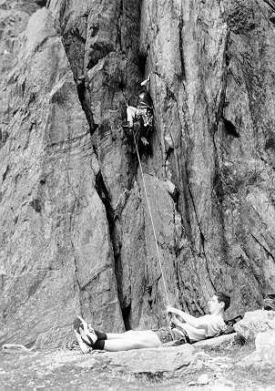

It is an Ancient Mountaineer,
And he stoppeth on of three.
'By thy long grey beard, and glitt'ring eye,
Now wherefore stopp'st thou me?
The Crag is dry, and friction good;
And I am next to climb.
Hold off! Unhand me grey-beard loon!
For now there ist no time.'
He holds him with his glittering eye -
The climber he stood still.
And thus spake on that ancient man,
The bright eyed Mountaineer.
He holds him with his skinny hand,
'There was a climb.' quoth he.
'A mountain high and line so true,
So beautious to see.
The rope was set, the camp was cleared,
Merrily did we climb
Above the 'shrund and onto rock
That stood the test of time.
The sun came up upon our left,
Out of the mist came he.
And we moved up on jam and crimp
O'er all the world to see.'
The climber's route it was then pinched,
Yet he cannot chooes but hear.
And thus spake on that ancient man,
The bright eyed mountaineer.
'Listen stranger! Storm and Wind
A Wind and Tempest strong!
For days and weeks it played us freaks -
Like chaff we were aloft.
Listen stranger, Mist and Snow,
And it grew wond'rous cold;
And ice was grown as hard as stone
And green as Emerauld.
Our axes blunt and crampons dull,
Did cast a dismal sheen.
Nor shapes of men, nor beasts we ken -
The ice was all between.
At length we spied a narrow ridge,
Through out the mist it came.
With legs astride we moved up high
And hailed it in God's name.
And from the summit could we see
Where Hea'en met Earth below.
Majestic beauty, wond'rous light
No mortal shall e'er know.'
The mountaineer, whose eye is bright,
Whose beard is tangled locks
Is gone; And now the sport climber
Turns from the bolted rock.
He went like one who hath been stunned,
A veil he has seen drawn.
A Mountaineer and wiser man
He rose the morrow morn.

Martin belaying Dave on Brandt Direct, Llanberis Pass
Photo: Jasmine Minbashian